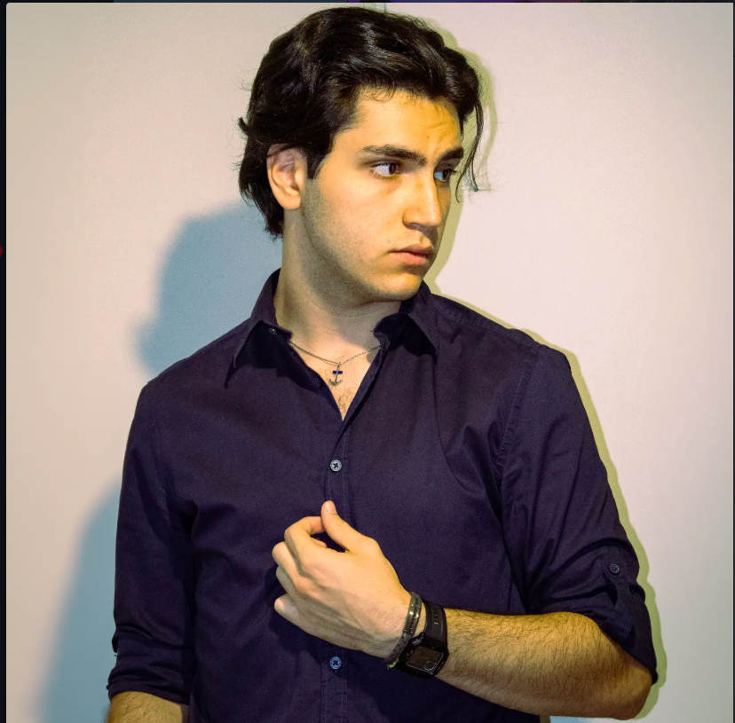

Mi Presento
Luca Salvigni
Fotografo | Matera, Italia
Mi chiamo Luca Salvigni e ho circa 21 anni. Sono nato e cresciuto a Matera, una città che ha profondamente influenzato la mia visione artistica.
La fotografia è arrivata nella mia vita non per caso, ma come una naturale espressione della mia curiosità verso il mondo. Ogni giorno, con la mia fotocamera al collo, cerco di catturare l'autenticità dei momenti, le emozioni sincere e le storie che meritano di essere immortalate.
A questa giovane età, ho già avuto il privilegio di documentare momenti significativi nella mia comunità. La mia passione non conosce limiti e continuo a evolvermi come fotografo, imparando qualcosa di nuovo da ogni scatto.

La Mia Passione
La fotografia non è solo una tecnica per me, è una passione che mi muove ogni giorno. Non la pratico per professione, ma per l'amore di catturare momenti autentici, emozioni sincere e storie che meritano di essere raccontate.
Attraverso l'obiettivo, scopro la bellezza in ogni istante: nel sorriso di una persona, nell'energia di un evento, nella serenità di un paesaggio. La mia missione è trasformare questi momenti in ricordi immortali.
Ogni progetto che accetto è un'opportunità di creare qualcosa di significativo, di aggiungere il mio tocco artistico a momenti che le persone custodiscono nel cuore.

Le Mie Esperienze
Eventi a Matera
Ho avuto il privilegio di fotografare numerosi eventi nella magnifica città di Matera. Dalla documentazione di cerimonie all'immortalazione di momenti di comunità, ogni scatto racconta la ricchezza culturale del territorio.
Liceo E. Duni
Sono stato parte della comunità scolastica del Liceo Classico E. Duni, dove ho avuto l'opportunità di documentare momenti importanti della vita studentesca, dalle manifestazioni alle celebrazioni accademiche.
Banco Solidarietà
Ho partecipato attivamente al Banco della Solidarietà, utilizzando la mia fotografia per raccontare storie di generosità e comunità. Documentare iniziative sociali è un modo per amplificare l'impatto del bene.
La Mia Visione
Credo nella fotografia come strumento di connessione umana. Ogni immagine che cattura la mia fotocamera è un ponte tra il momento e l'eternità. Voglio continuare a raccontare storie autentiche, a supportare iniziative che contano, e a fare della mia passione un contributo positivo alla comunità.